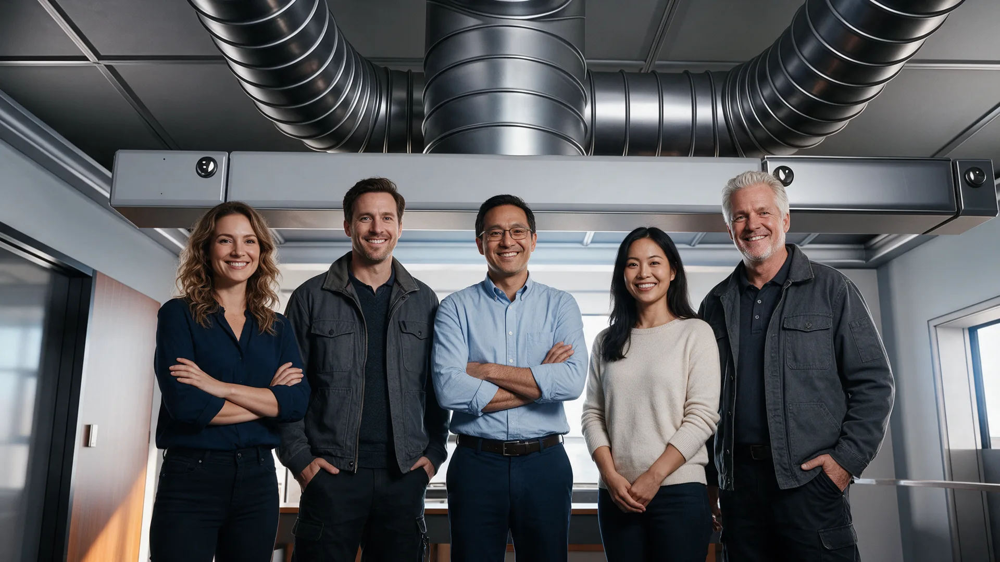

Lüftungsbau, der funktioniert.
Montage von RLT-Anlagen als Subunternehmer im Werkvertrag — für TGA-Firmen und Generalunternehmer in der Pfalz.
Kanäle und Rohrleitungen, fachgerecht verlegt.
Wir montieren Luft- und Rohrleitungen und bauen Brandschutzklappen normgerecht ein — die Grundlage jeder sicheren RLT-Anlage.
Jedes Fabrikat, ein Team.
Wir montieren Lüftungs- und Klimageräte aller gängigen Hersteller und Fabrikate — unabhängig von Marke oder Modell.
Feste Teams. Flexibel, wenn der Bauablauf es verlangt.
Unsere Monteur-Teams übernehmen Ihre Baustelle zuverlässig von Anfang bis Ende. Bei Bedarf arbeiten wir in splitbaren Einsatzteams und reagieren so flexibel auf Planänderungen — mit modernem Werkzeug und gewissenhafter Ausführung. Zusätzlich vermitteln wir Fachpersonal für Heizung, Sanitär, Luft & Klima, Anlagenbau und Isolierung.
Unsere Monteur-Teams übernehmen Ihre Baustelle zuverlässig von Anfang bis Ende — flexibel, mit modernem Werkzeug. Zusätzlich vermitteln wir Fachpersonal für Heizung, Sanitär, Luft & Klima, Anlagenbau und Isolierung.